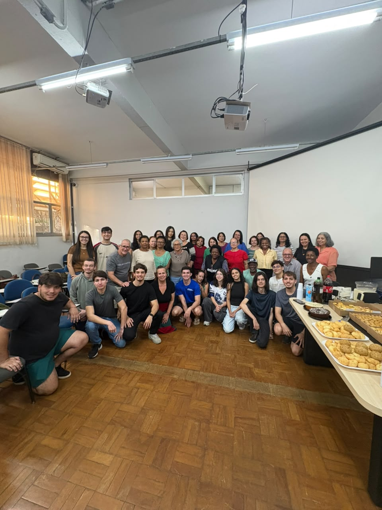
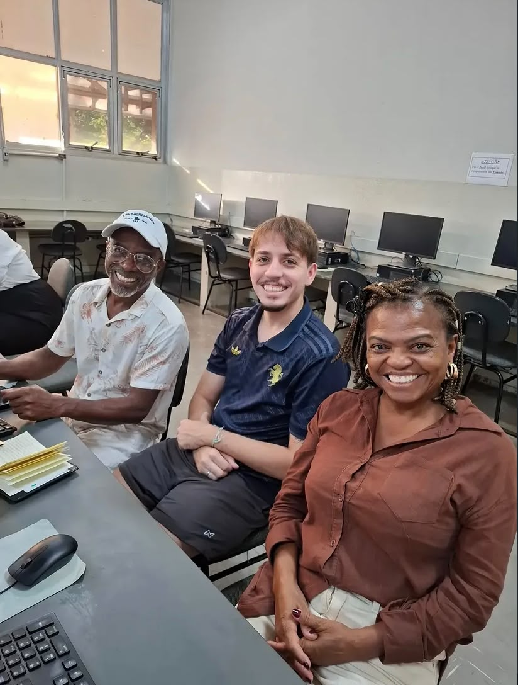
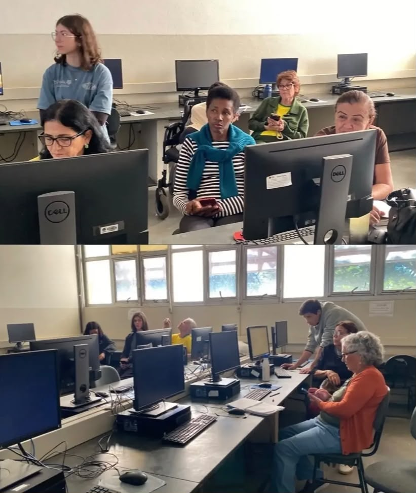
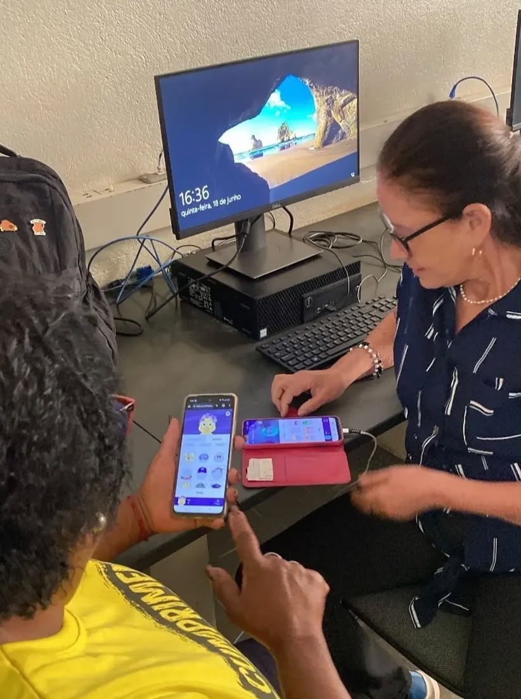
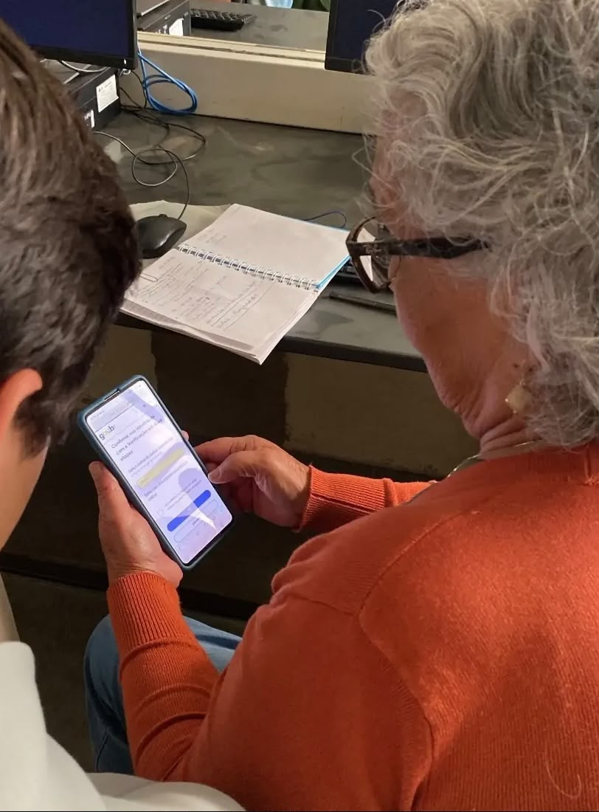
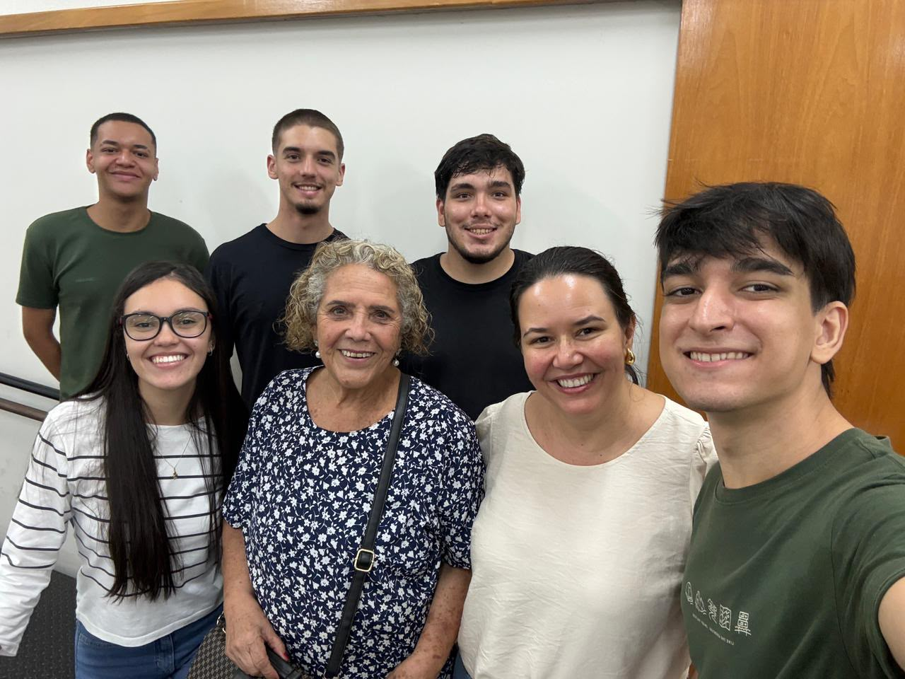
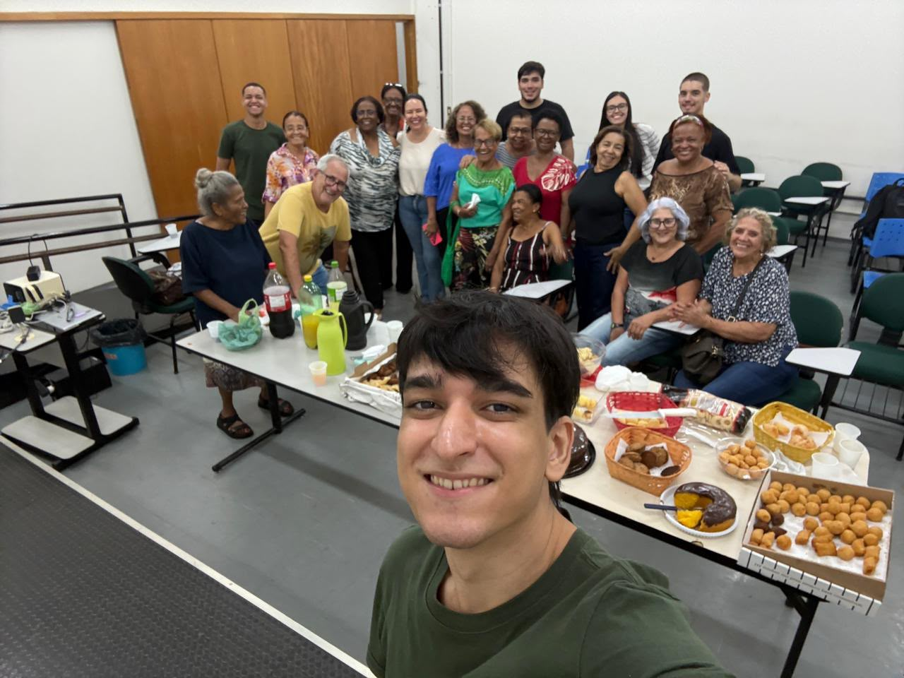
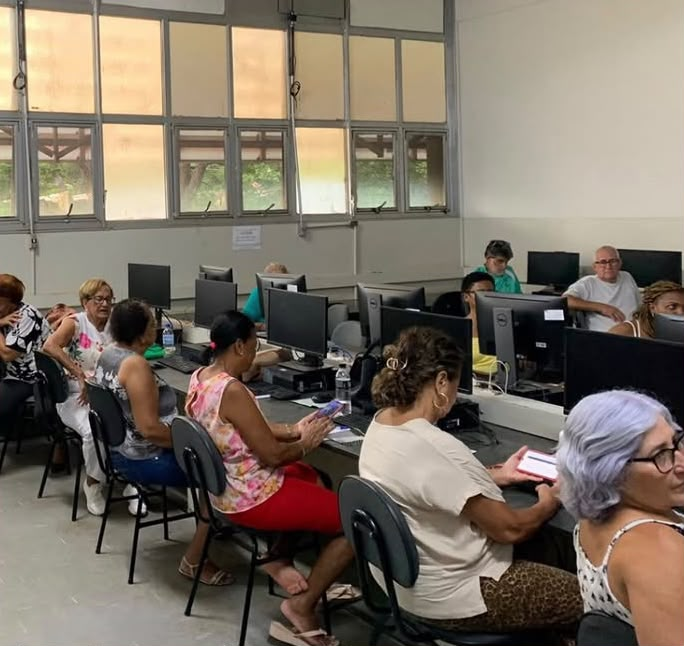
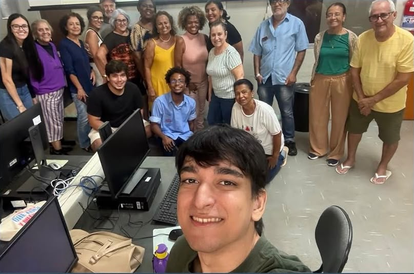
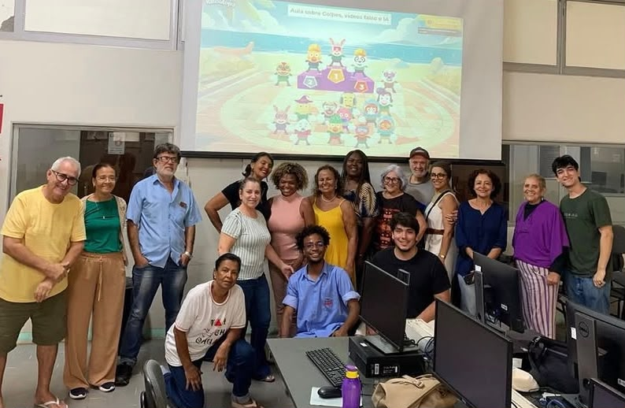

Celular
Aprenda a utilizar recursos e funções do celular de forma prática.
Projeto de extensão • Universidade Federal de Uberlândia - UFU
O Saber Digital promove inclusão digital, ajudando pessoas a utilizar a tecnologia de forma mais simples, segura e independente.

SOBRE NÓS
Criado em 2016, o Saber Digital é um projeto de extensão da Universidade Federal de Uberlândia (UFU) voltado ao letramento digital de pessoas idosas.
Ao longo dos anos, o projeto acompanhou as transformações da tecnologia e as necessidades dos participantes. O que antes era marcado pelo uso de computadores passou a dar cada vez mais espaço aos smartphones, hoje presentes em diversas atividades do dia a dia.
Nas aulas, os participantes aprendem de forma prática e acessível a utilizar diferentes tecnologias, sempre com o acompanhamento próximo dos monitores e respeitando o ritmo de aprendizagem de cada pessoa.
APRENDIZADO
Nas aulas, aprendemos de forma prática e acessível a utilizar tecnologias e ferramentas presentes no nosso dia a dia.
Aprenda a utilizar recursos e funções do celular de forma prática.
Aprenda a enviar mensagens, fotos, contatos, localização e muito mais.
Conheça ferramentas de inteligência artificial e suas possibilidades.
Aprenda a reconhecer golpes e proteger seus dados na internet.
MOMENTOS
Confira os registros das nossas turmas, atividades práticas e encontros.









NAS REDES
Veja nossas atividades, novidades e registros das aulas pelo Instagram.
Encerramento do último semestre com muita comemoração!
Monitores acompanhando o aprendizado de cada aluno passo a passo.
Descobrindo na prática funções essenciais do dia a dia no celular.
Aprender a trocar mensagens e navegar com total independência.
Troca de experiências e muitos momentos especiais em turma.
Encerramento do último semestre com muita comemoração!

Monitores acompanhando o aprendizado de cada aluno passo a passo.

Descobrindo na prática funções essenciais do dia a dia no celular.

Aprender a trocar mensagens e navegar com total independência.

Troca de experiências e muitos momentos especiais em turma.
DÚVIDAS
Tire suas dúvidas sobre o funcionamento das turmas, horários e certificados.
O projeto é gratuito e voltado para pessoas a partir de 55 anos que desejam aprender ou aprimorar seus conhecimentos no uso do celular, internet e tecnologias.
As aulas presenciais acontecem às quarta e quinta-feiras, das 15h às 17h, no Laboratório da Faculdade de Computação (FACOM), no Campus Santa Mônica da UFU.
As inscrições ocorrem no início de cada semestre letivo da UFU. Divulgamos as datas oficiais e o formulário de inscrição em nosso Instagram.
Sim! Ao concluir as atividades e frequências do projeto, o participante recebe um certificado de extensão emitido pela Universidade Federal de Uberlândia (UFU).